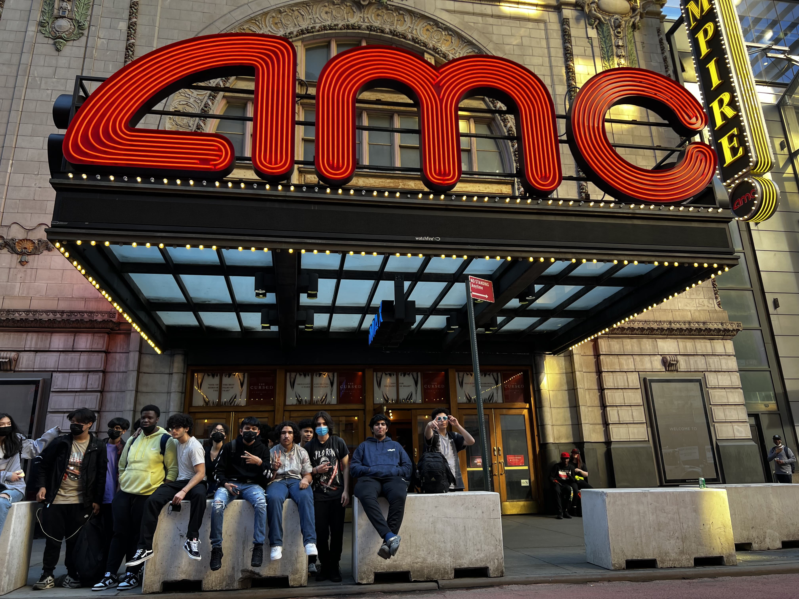

About Me

My name is Anthony Manjarrez, I am 16 years old, and I attend Manhattan Center for Science and Mathematics. My family is from Mexico, with me being first gen. I belong to a family of five, with me being the oldest of my two other siblings. I am in many programs and have lots of hobbies. For example, I love playing guitar, coding, soccer, playing video games, and collecting shoes. I also love spending time with friends and family, often going to Manhattan and exploring the city. I am an aspiring software engineering with dreams of working for a big tech company. Through various coding programs like All Star Code I have the ability to create websites like these.
These are all the classes I have taken and will take my Senior year.
Extra Curricular Activites
I have always been interested in joining many programs to be able to explore new fields and meet people. I am constantly looking for new ones to join when I have free time. These are two programs that I am currently in and enjoy so much!